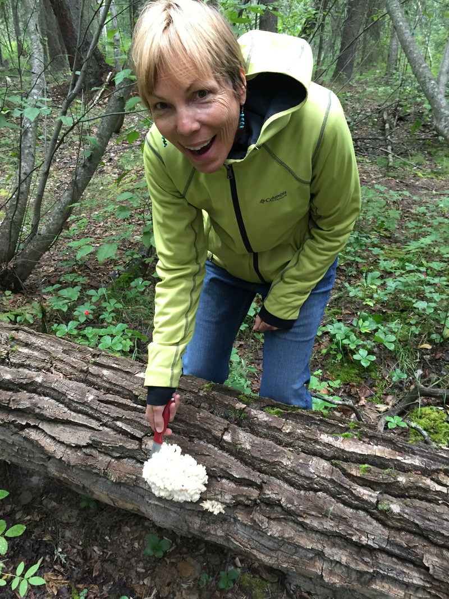

Still mystified and, admittedly, amused by the stolen cabin (the sign hasn't been removed). Now, just one sign post away, is this new advertisement!
"Love Letter to Fairbanks", by Alli Harvey |
| That's how I affectionately refer to Collin's family, some of whom recently came to Fairbanks for a visit. Collin's sister, brother-in-law and mother traveled from Colorado to see what our life is all about up here in the Last Frontier. Among other adventures, we:
|  Bear's Head Tooth mushrooms, ripe for the taking. |
| So I was working on my volunteer mileage spreadsheet today, and I am at 2000 miles for 2015 already! Thank goodness for my trusty Ford Escape (and the fact that it's a hybrid). I bought it used off Ebay in 2010, and it's now got just over 100,000 miles on it. (Incidentally, it will make the 3000-mile trip back to Colorado next month. Long-time friend Sandy is coming to Alaska to join me and Luna for our sojourn south at the end of Collin's contract.) Most people know that I did a lot of hospice work for HopeWest back in Colorado. Once established here in Fairbanks, I dove right into volunteer work for the local hospice organization doing primarily patient care visits, facilitating grief groups, and working a half-day shift in the office doing clerical stuff. |
Additionally, I was trained to become a volunteer ombudsman for the State of Alaska, working as an advocate for seniors living in assisted living facilities. (I prefer to call myself an ombuds-woman!) I am assigned to 3 local facilities, and make surprise visits to each of them once/quarter. It's fun to talk with the residents who, for the most part, are friendly and satisfied with their situation. It gets tricky when there is a violation to address with the management. So far they've included things like locked gates (safety hazard), and aides whose English skills aren't sufficient (potential problem in a 911-emergency situation if they cannot convey the problem or understand instructions being given to them).
And finally, I work for the senior center, doing wellness visits with their Meals on Wheels participants. Given that Alaska is experiencing a Silver Tsunami, and we have the greatest rate of seniors per capita of anywhere, various agencies are looking at ways to help seniors stay home, or "aging in place." Our team of wellness advocates interviews seniors and tries to identify problems or deficiencies that could be improved in their current living condition, in hopes of keeping them there longer.
I feel so privileged to meet these old timers and hear their stories. As a newcomer to Alaska, I'm a good audience for their tales of hard work and wild adventure in the Last Frontier. My biggest challenge is time management, as I could spend hours with each one of them!
And finally, I work for the senior center, doing wellness visits with their Meals on Wheels participants. Given that Alaska is experiencing a Silver Tsunami, and we have the greatest rate of seniors per capita of anywhere, various agencies are looking at ways to help seniors stay home, or "aging in place." Our team of wellness advocates interviews seniors and tries to identify problems or deficiencies that could be improved in their current living condition, in hopes of keeping them there longer.
I feel so privileged to meet these old timers and hear their stories. As a newcomer to Alaska, I'm a good audience for their tales of hard work and wild adventure in the Last Frontier. My biggest challenge is time management, as I could spend hours with each one of them!
Marisa Lee
A cheechako living in Fairbanks, Alaska.
cheechako - a newcomer to Alaska, ignorant of the terrain, the weather, the animals, the culture, the necessary driving skills in the winter, etc. Opposite of a sourdough.
Here's a quick link to my "Cat Tales" flying blog at Parkwest Air Tours.
Archives
August 2016
July 2016
June 2016
May 2016
April 2016
March 2016
February 2016
January 2016
December 2015
November 2015
August 2015
July 2015
June 2015
May 2015
April 2015
March 2015
February 2015
January 2015
December 2014
September 2014
August 2014
 RSS Feed
RSS Feed
{kind=link}
{kind=link}
{kind=link}
{kind=link}
{kind=link}
{kind=link}
{kind=link}
{kind=link}
{kind=link}
{kind=link}